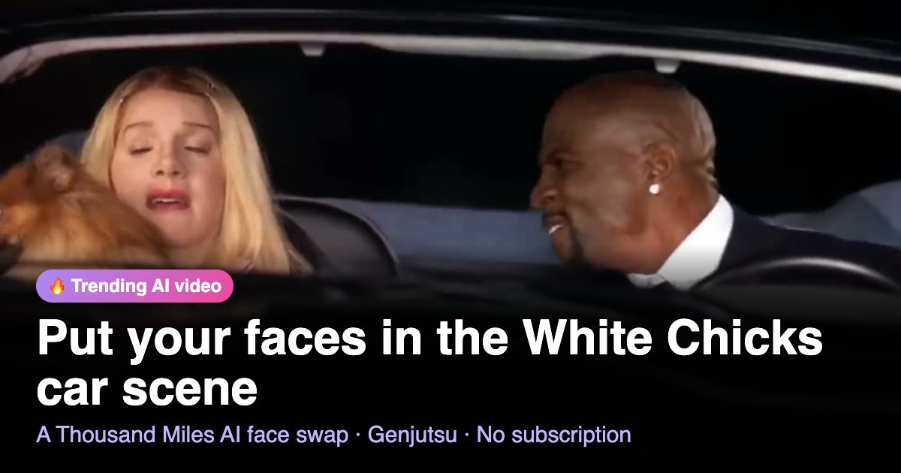

How to Make the White Chicks "A Thousand Miles" AI Video
Short answer: open Genjutsu Studio, where the scene is already loaded, add a photo of each person and click Generate. It takes about 5 minutes and needs no subscription or editing skills.

What is the White Chicks AI trend?
It's the car scene from White Chicks (2004) where Latrell, played by Terry Crews, sings Vanessa Carlton's "A Thousand Miles" while Marlon Wayans' character sits next to him. The contrast between a huge, intimidating guy and a soft pop ballad is what makes it funny every time. In 2026 AI face swaps brought it back: people put themselves, their friends, or their favorite players in the two seats and post it to TikTok, Instagram Reels and YouTube Shorts.
How to make the White Chicks AI video, step by step
- Open Genjutsu Studio. Go to the home page. The White Chicks car scene is already loaded, and so is the prompt. You don't need to find the clip or a CapCut template.
- Add two photos. Add one photo for the person on the left (the passenger seat) and one for the person on the right (Terry Crews' seat, the driver). Use clear, front-facing, well-lit photos with one face each.
- Keep 720p. 720p is the default and looks good on TikTok, Reels and Shorts. 480p is cheaper, 1080p is sharper.
- Click Generate. You'll see the exact price first. The video renders in a few minutes. You can close the tab and come back.
- Download and post. Download the MP4 and post it. Add the original song "A Thousand Miles" in the app you post with if you want the full meme.
Why Genjutsu looks better than a regular face swap
A classic face swap pastes a face over each frame, which often looks flat because it ignores the warm car lighting, the shadows and the head turns. Higgsfield Genjutsu uses motion transfer: it extracts the motion, camera move and timing from the original clip and rebuilds the characters from your photos. The result moves exactly like the original scene.
How much does it cost?
You pay per second of video, with no subscription. The full 19-second car scene at 720p costs 1,957 credits (about $19.57). You always see the exact price before you click Generate, and failed or blocked videos are refunded automatically.
Tips for a better result
- Use photos where the face is big, sharp and facing the camera.
- Avoid sunglasses, hats that cover the forehead, and strong shadows.
- Put the photos in the right slots: left = passenger, right = driver.
- Only use photos of people who agreed to be in the video.
FAQ
Is there a White Chicks AI template without CapCut? Yes. Genjutsu Studio has the scene preloaded in the browser, on phone or desktop.
Can I do it on my phone? Yes. The site works on iPhone and Android. Upload photos straight from your gallery.
Can I use a different scene? Yes. Remove the preloaded clip and upload any MP4 between 4 and 30 seconds.